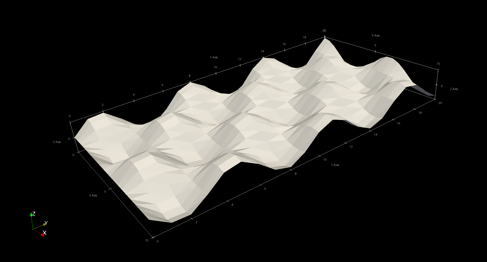

Generating surface plots
Surface plots can be used to represent two-dimensional data. WriteVTK includes the convenience function vtk_surface for visualising surface plots via VTK files. This works in a similar way to surface plots in many plotting packages, e.g. Makie.
Basic usage
The vtk_surface function takes the coordinates xs and ys as well as the heights zs of the data. Other than that, it works in the same way as vtk_grid:
julia> using WriteVTK
julia> xs = 0:0.5:10; ys = 0:1.0:20;
julia> zs = @. cos(xs) + sin(ys');
julia> vtk = vtk_surface("surf", xs, ys, zs)
VTK file 'surf.vtu' (UnstructuredGrid file, open)
julia> vtk_save(vtk)
1-element Vector{String}:
"surf.vtu"This will generate a surf.vtu file (corresponding to a VTK unstructured grid) ready to be visualised:

Note that the above example represents a regular 2D grid. For irregular grids, it is also possible to pass xs and ys as matrices instead of vectors.
Attaching more data
In the above example, the dataset does not include any data that could be readily used to colour the surface. In surface plots, it is common to colour the surface by its own height. This can be easily achieved by writing the zs matrix as point data when creating the VTK file:
julia> vtk_surface("surf2", xs, ys, zs) do vtk
vtk["z_values"] = zs
end
1-element Vector{String}:
"surf2.vtu"
Above we have used the do-block syntax in the very same way it can be done with vtk_grid. Of course, the same syntax can be used to add as many datasets as one wants.
For more details, see the vtk_surface documentation.